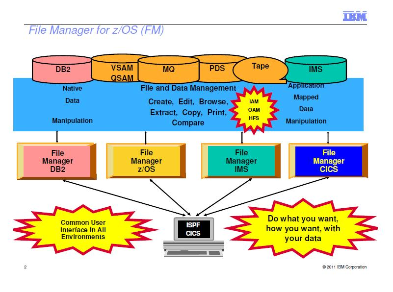

IBM File Manager for z/os 续(一)
上一次我简单介绍了下大机平台上的一个强大的文件查看/编辑工具，这里我要介绍几个在用FileManager查看/编辑 QSAM顺序文件的时候的小技巧。
 上图显示的是employee的信息文件，比较小，只有几条记录。但是一般在生产环境上，数据都有好几百万条，如果你很傻的直接FIND 关键字来查找，那么抛开CPU耗费不说，你自己也将耗费很长的一段时间来等待搜索结果出来，所以，看看这篇文章，学会几个
上图显示的是employee的信息文件，比较小，只有几条记录。但是一般在生产环境上，数据都有好几百万条，如果你很傻的直接FIND 关键字来查找，那么抛开CPU耗费不说，你自己也将耗费很长的一段时间来等待搜索结果出来，所以，看看这篇文章，学会几个*File Manager*的使用技巧还是有必要的(如果你没功夫去看IBM红宝书的话)。
1、只查找指定字段(Field)
例：只在ACCT字段查找关键字“IT”
命令： F IT #6 (可以把#6看成ACCT的别名)
例：只在ACCT字段和EP_NAME字段查找关键字"IT"
命令： F IT #6 #8
2、只查找指定几列 (Column)
例：只在第8至20列查找关键字"AN"
命令 ...
comments
Read More
Debug Tool for z/OS
作为一个PL/I、COBOL程序猿，调试程序是必须的一项技能。这里我来说说大机上面的调试工具IBM的DebugTool，它支持的环境包括BATCH, TSO, CICS, DB2, DB2存储过程以及UNIX等等。
这篇我来说说如何设置让程序可以被Debug
首先，你必须在编译程序的时候需要选择以Debug模式编译，这个在changeman里面直接在编译的时候选个IBM Debug Tool="Y"就可以了。
接着，如果是BATCH的，就需要在JCL的PARM中指定TEST运行时的参数，通过VTAM接口来初始化debug模式，VTAM%后面跟着的是userid，就像这样：

是BATCH的话，你还要有一个Debug的session，这个可以参照我的另外一篇博文：<<登陆大型机——Aviva的介绍>>，只需注意在建debug session的时候destination的IP一般和普通大机的物理ip是不一样。填上正确的ip,然后用你的id登陆,这里我的id是IBMUSER，须跟上面设置的一样。
回到JCL这边，submit，那恭喜你，你就可以看到Debugtool的画面了:

但是，如果程序是ONLINE的话，一般我们用CICS上面的DTCN这个工具来debug的。这里我假设你已经在上面“首先”里面正确编译了一个ONLINE的程序PRGM002 (带debug编译选项的)。然后，你登陆CICS ...
comments
Read More
dnsdict6获取ipv6地址
[dnsdict6 v1.4 (c) 2010 by van Hauser / THC www.thc.org]
dnsdict6用来查询网站的ipv6地址，如果存在的话就显示，不存在的话就没有显示。可自定义线程数和字典。用法为：
Syntax: dnsdict6 [-t THREADS] domain [dictionary-file]
root@bt:~# dnsdict6 google.com
Starting enumerating google.com. - creating 8 threads for 3001 words...
Estimated time to completion: 2 to 5 minutes
ipv6.google.com ...
comments
Read More
百度统计少于32个页面报错
今天试了下百度统计里面的"SEO建议"功能，居然神奇般的可以使用了。

还记得前些日子安装了百度统计代码，正想试试最新的“SEO建议”功能的时候，总是出现错误：“可供检查的页面数量过少，建议您至少在检查范围内的32个页面安装百度统计代码”错误.
现在分析来可能有几种原因：
<1>. 网站刚安装百度统计代码，比如安装不到一两天时间。我基本在上个月刚开博的时候就安装了，到前几天还是不能使用“SEO建议”功能，所以个人觉得不是这个原因。
<2>. 网站本身页面不足。单说静态页面的话，一篇文章就一个页面了，那我的起码也有60个左右了吧。要是不说静态页面的话，那wordpress本身就只有一个页面了，更不可能。所以应该也不是页面不足的原因。
<3>. 网站访问量低，PV低。 我估计这个有些可能，因为上个月到前几天为止，基本没什么人访问的。
<4>. 百度收录页面少于32个。这个我是最认为有可能的，因为我的博文这几天才被百度正常收录的，所以这个可能性大一点。
总结：结合第3、4点，用一句话归纳就是——“内容为王”。百度不是傻子，你网站不是垃圾站，有内容了，百度自然就收录了 ...
comments
Read More
IBM File Manager for z/os
IBM的File Manger 在大机平台上是非常强大的文件查看/编辑器，是一个强大的ISPF应用程序。这里先贴上一张IBM2011年最新的关于File Manger的结构图，我认为这张图很好地诠释了File Manager 的强大之处：

[图片来源于IBM官方网站，仅供学习交流之用]
参照上图，我这里要讲的是当中的第二块内容——File Manager for Z/OS，关于其它部分如File Manager for DB2,File Manager for IMS和File Manager for CICS，以后再说。(其实更主要是因为平常工作做我用for z/os用的多，db2和cics的用得少，不敢在这瞎说。)。基本的操作原理就不说了，我就说说我在平常工作当中的几个有用的小技巧好了。 以查看/编辑QSAM (sequential)的dataset为例，选项1是查看(View),选项2是编辑 ...
comments
Read More
Linux硬件信息目录proc
linux下面/proc是一个貌似普通但是功能却非常强大的目录硬件信息目录，包含核心的硬件信息，内存信息，系统运行进程信息，虽然对于用户来说里面的绝大部分内容都是只读的，但是内容还是会随着系统状态的不同而变化的。
root@bt:/# cd /proc
root@bt:/proc# ls

图中每一个数字目录都代表着当前运行的一个相应的进程，每个数字都是一个进程号:
root@bt:/proc# ps -ax #查看当前进程
root@bt:/proc# cd 2778 #进入进程2778的目录

/proc中另外那些非数字的系统信息文件每个都是有意义的，这里列出一些最重要的：
1、/proc/cpuinfo: CPU信息
2、/proc/memiinfo: 物理内存，交换空间等信息
3、/proc/mounts: 已加载的文件系统的列表
4、/proc/devices: 可用的设备列表 ...
comments
Read More
mainframe访问磁带(Tape)
大机上磁带(tape)一般用来存储大容量的数据的，可以降低成本。我们要访问tape中的数据的时候，一般的做法是用JCL将tape中的记录转存到直接存储访问设备(DASD)中再查看。 下图中，我们通过utility ICEMAN将IBMUSER.DNS.TAPE这个tape中的所有记录都转存到IBMUSER.TAPE.TO.DASD中，这样就能查看了。

不过，需要注意的是，tape里面的数据量一般都很大，所以更多时候我们再用的时候会指定读取的record的数目，比如这里我们指定读取100条：

甚至，你还可以用SORT中的语法筛选出你想要的条件。比如(1，4，EQ,'AAAA')这样子。
comments
Read More
用ISRSUPC在PDS所有member中搜索指定字符串
在一个PDS中搜索名字叫做“snailgo”的member，可以在command line上输入命令mem snailgo即可。但是，如果想搜索整个PDS下所有的成员(Member)中指定字符串，有没有办法呢？答案是肯定的，我们可以用一个比较的utility ISRSUPC来实现，同样的，只需submit一个JCL。

这里，我们在PDS “IBMUSER.TEST.LIB.JCL”和“IBMUSER.TEST.LIB.PROC”下的所有member中搜索字符串”SNAILGO”。参数为：PARM=(SRCHCMP,ANYC)，其中SRCHCMP指定要搜索的字符串，ANYC表示ANY Case，即搜索任何符合的情况，要了解更详细的PARM的用法，可以参考IBM红宝书IBM manual ISPF/PDF Guide ...
comments
Read More
新建空的GDG generation
有时候你不希望GDG的当前generation里面有数据，但GDG又不能没有generation,否则JCL会提示找不到dataset。这时候你可以用IBM的IEFBR14utility来生成一个空的generation。IEFBR14它实际上什么也不做的空程序，常常被我们用来生成空的FILE。不只是gdg，普通的dataset也可以生成。

submit，查看，空的generation G0001V00 就生成了:

comments
Read More
更改GDG世代数参数
建完GDG base后更改GDG的generation。用下面的JCL提交即可。这里我将上次建的GDG base “IBMUSER.TEST.LIB.GDGBASE” 的世代数更改为5:

submit即可。 最后，你可以在GDG base前面用命令“LISTC GDG ENT(/) ALL”来检查看看是不是参数已经从10改成5了。
comments
Read More